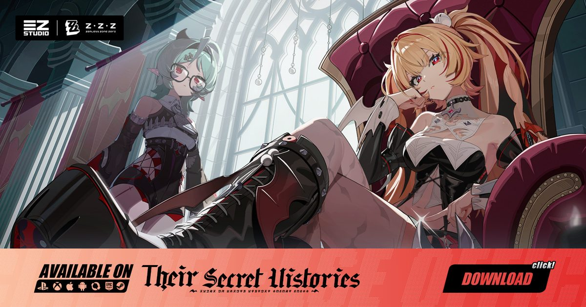

2026-10-20 · 二游深读
绝区零 Version 3.3「Journey to the Sky（云上之旅）」将在 10 月 21 日全球上线。表面上看，这是一个标准的六周版本：两个新 S 级代理人、两个复刻、一堆活动、签到送 10 张加密母带。但把官方目前披露的机制摊开看，会发现 Phoenix 身上挂着一个比「多一个火 C」重要得多的东西——她的核心技让全队的属性异常伤害可以触发暴击。在绝区零原本的伤害模型里，异常伤害（灼烧、感电、侵蚀、紊乱）只吃异常精通和基础攻击，压根不进暴击率 / 暴击伤害那一栏。这一条被改掉，动的不是某个角色，是整条异常队的经济学。

先把排期摆清楚，再谈判断。3.3 走的是标准的双阶段卡池 + 六周周期：
要理解这件事的分量，得先说清楚绝区零原本是怎么算伤害的。它长期存在两条相对独立的伤害线：直伤线（吃攻击、暴击率、暴击伤害、增伤）和异常线（灼烧 / 感电 / 侵蚀 / 紊乱，吃异常精通与基础攻击，不吃暴击）。这条分界不是小设定，它决定了两个体系的养成成本完全不同——异常队堆精通，直伤队堆双暴，两边的驱动盘与音擎几乎不通用。
Phoenix 的核心技 Nirvana 干的事是：让处于异常状态的敌人进入「Sear」状态，下一次异常伤害必定暴击；而她的机制描述里更进一步，是让全队的属性异常伤害可以触发暴击。这一步的意义在于——
所以我的判断是：Phoenix 不是又一个火 C，她是一个体系开关。这类角色在二游里通常有两种结局——要么成为后续所有异常队的地基（类似当年「第一次有人给全队加精通」那种），要么因为数值给得太保守而变成一个好看但不必需的插件。区别只在数值给得够不够大方，而这个要等实装首日才能定论。
Phoenix 身上还有一条很容易被当成赠品的被动：受到致命伤害时立即复活并恢复部分生命值。官方描述里甚至说会回到满血。
这个机制单独看是好事，容错率谁不喜欢。但放在绝区零的自我定位里看，它有点刺眼。绝区零一直强调自己是操作型动作游戏——闪避、极限支援、失衡、连段，玩家的技巧应该体现在这些地方，而不是体现在「死了还能站起来」。
当一个版本的主推 C 位需要自带一条命，更合理的解读是：3.x 后期内容的伤害压力已经到了需要角色自带保命的程度。零号空洞高层、高层式舆防卫战这类场景的容错窗口被压得越来越窄，官方没有选择削弱内容，而是选择在角色侧发「免死金牌」。这是很典型的运营思路，也很有效，但它同时说明一件事：后续内容的数值膨胀速度，可能比玩家的操作成长速度快。如果你是一位在意「手法」的玩家，这条被动值得你多看两眼——它好用，但它好用本身就是个信号。
机甲战斗这次的设计位置很关键：它不是限时活动模式，而是内嵌在主线里的。Lindverne 用业果核心造机甲，你推进 3.3 主线就一定会摸到。
目前确认的机制有几条：机甲有近战与远程两套模式，战斗中可自由切换；在打出 EX 特殊技或完成闪避之后，可以接一发更强的激光攻击；环境也是武器——可以射击爆炸物，也可以用重拳把物体投掷出去，后者既用于战斗也用于解谜。官方还说机甲玩法会在后续版本继续出现。
这套设计的聪明之处在于它复用了绝区零已经教过玩家的手感：闪避接激光、EX 接激光，和平时打连段的节奏是同一套肌肉记忆，学习成本几乎为零。不明之处也很明显，而且官方到现在没说：机甲有没有名字、有没有养成系统、主线之外能不能重玩、有没有专属奖励。这四项决定了它究竟是一次性的演出噱头，还是一个真正的新玩法层。如果主线通关后机甲就没了，那它会是 3.3 最可惜的一块内容。
这是我认为最实用、也最容易被忽略的一点。3.3 在版本序列里的位置很尴尬：它前面是 3.2「Their Secret Histories」，后面是传说中的3.4 与《崩坏：星穹铁道》的联动大版本。二游的版本排期里，桥接版本通常承担两个任务——把主线推到能接住大版本的位子，以及在不上新体系的前提下维持活跃。
换句话说：3.3 有真东西（Phoenix 的机制改动是真的），但资源炸弹大概率不在这一站。Phoenix 的体系开关再重要，联动版本的限定池在商业上的权重通常更高，而且联动角色往往不进常驻、复刻窗口极不确定。
所以这次的规划思路应该倒着做：先给 3.4 联动留出一份不可动的预算，再看剩下的够不够拿下 Phoenix 或 Severian。如果你现在的菲林只够稳一个 S 级，那「Phoenix 的机制价值」和「联动角色的绝版风险」之间，后者通常更硬。
| 维度 | Phoenix（阶段一） | Severian（阶段二） |
|---|---|---|
| 定位 | S 级 · 火 · 异常 | S 级 · 风 · 强攻 |
| 核心机制 | Nirvana：异常态敌人进入 Sear，下次异常伤害必暴击；使全队异常伤害可暴击 | Endless Breeze：自动闪避敌方攻击并触发反击；闪避 / 命中攒能量放剑连段 |
| 价值类型 | 体系级：改写伤害公式，影响所有异常队友 | 手感级：自动闪避降低操作门槛，提升直伤上限 |
| 最大风险 | 数值若保守就沦为插件；输出方差变大 | 自动闪避若触发过强，会削弱动作游戏的操作感 |
| 适合谁 | 已经在玩异常队、愿意重做驱动盘的玩家 | 主玩直伤、想降低闪避门槛的玩家 |
一句话总结这张表：Phoenix 买的是「可能性」，Severian 买的是「舒适度」。想赌体系的人看阶段一，想让手更稳的人看阶段二，两者不冲突，但六周内两个都稳住的预算压力不小。
我们的评分：8.4 / 10（版本内容前瞻评分）
给分主要在两处：机甲战斗被放进主线而不是活动（这让所有玩家都能摸到），以及 Phoenix 敢去动一条上线以来没人动过的伤害规则。扣分在 3.3 作为桥接版本的体量天花板和机甲玩法的四个未确认项。
我们的观察
这次的两个新 S 级有一个共同点：都在替玩家承担原本属于玩家的责任。Phoenix 承担的是「别死」，Severian 承担的是「记得闪避」。这在 3.x 后期不是巧合——当内容的数值压力上涨，官方最省事的解法就是把容错塞进角色。短期大家都会玩得很舒服，长期要警惕的是操作天花板的意义被一点点稀释。
我们的观点
我认为 Phoenix 这条机制，最大的受益者其实不是火队，而是那些常年坐冷板凳的异常角色。异常伤害不能暴击这件事，长期把一批设计不错的角色压在地板上；一旦这个锁被打开，它们的账面价值会集体上浮。这比再出一个更强的火 C 有意义得多，也说明策划终于愿意动底层规则，而不是一直往上叠数值。
我们的案例对比
同样是「一个角色改变一个体系」，可以对照看两类先例：一类是数值型——新角色只是把某属性的伤害天花板抬高，老角色原地不动，这种改动安全但会加速膨胀；另一类是规则型——像这次一样打开一条原本关闭的属性通道，老角色集体受益，但代价是养成逻辑要重学、短期平衡会乱。规则型改动的风险更高，回报也更高，二游里敢做的版本通常都留下了名字。
我们的实验
编辑部建议做一次「暴击收益对照」：在 3.3 上线前，先记录你现有异常队在一轮式舆防卫战里的结算伤害与时间；上线后把 Phoenix 放进队，只改队伍不改驱动盘，再打同一层，看差额；第三步才试着给异常角色换一套带暴击的驱动盘，再看第二次差额。三步做完，你就能自己判断「全队异常暴击」在你的账号上值多少菲林，而不是听别人喊强或者喊弱。
3.3「云上之旅」最值得记住的不是一个新火 C，而是绝区零第一次有人伸手去改自己的伤害公式。异常伤害能不能暴击，这道题从开服到今天都没有人正面回答过，现在 Phoenix 给出了一个答案。它会带来短期的混乱——驱动盘要重洗、异常队的账面要重算、社区会吵上好几天——但混乱本身说明这个版本动了真东西。至于它会不会成为后续所有异常队的地基，取决于数值给得多大方；至于你该不该抽，取决于你能不能给 3.4 那份联动留出足够的弹药。